IderKopi Absensi adalah platform absensi mobile internal berbasis Flutter (Android, iOS, Web) dan Backend Go/Fiber (PostgreSQL 16) yang dibangun untuk mengelola presensi harian seluruh staf operasional dan admin IDER KOPI. Setiap transaksi presensi diverifikasi secara otomatis berbasis koordinat lokasi GPS (server-side & client-side geofencing radius 150 meter) serta foto selfie kamera depan yang terenkripsi.
workmanager saat koneksi pulih.flutter_secure_storage, auto-refresh token 401 interceptor, serta header client_request_id untuk mencegah duplikasi absensi.Berikut adalah seluruh rincian teknologi, kerangka kerja, library, dan infrastruktur backend yang digunakan pada versi 2.0.0+1:
| Layer / Kategori | Teknologi / Package | Fungsi & Keterangan Detail |
|---|---|---|
| Mobile Framework | Flutter SDK >= 3.13.0Dart SDK >= 3.0.0 |
Framework cross-platform native AOT compilation. Menggunakan Material Design 3. |
| State Management & DI | flutter_riverpod: ^2.4.0riverpod_annotation: ^2.3.0freezed: ^2.4.0 |
State reaktif, dependency injection, caching, dan immutable data classes via build_runner. |
| HTTP & Networking | dio: ^5.4.0 |
HTTP client dengan AuthInterceptor untuk penanganan Bearer Token JWT, auto-refresh token saat 401, dan header client_request_id. |
| Navigation & Routing | go_router: ^13.0.0 |
Declarative routing dengan Auth Guard, forced password redirect, dan deep linking. |
| Offline Cache & Storage | sqflite: ^2.3.0flutter_secure_storage: ^9.0.0shared_preferences: ^2.2.2 |
Database SQLite lokal untuk antrean absensi offline, penyimpanan token aman di Android Keystore/iOS Keychain, dan preferensi pengguna. |
| Background & Sync | workmanager: ^0.10.7connectivity_plus: ^5.0.2 |
Background worker untuk penyelarasan otomatis data absensi offline saat perangkat mendapatkan koneksi internet. |
| GPS & Maps | geolocator: ^11.0.0flutter_map: ^7.0.2latlong2: ^0.9.1 |
Sensor GPS presisi tinggi, kalkulasi jarak Haversine, dan pemetaan peta titik outlet secara visual. |
| Kamera & Olah Foto | camera: ^0.10.5image: ^4.1.0 |
Kontrol kamera depan, penangkapan foto selfie, dan kompresi JPEG resolusi optimal client-side. |
| Notifikasi & Grafik | flutter_local_notifications: ^22.2.0fl_chart: ^1.2.0 |
Pengingat jam masuk/pulang lokal dan visualisasi grafik rekapitulasi kehadiran & KPI. |
| Backend Service API | Go (Fiber Framework)Port 2026 / 2027 |
Service API kustom Go Fiber berperforma tinggi dengan endpoint /api/v1/auth, /api/v1/attendance, /api/v1/employees. |
| Database & Container | PostgreSQL 16 Docker & Docker Compose |
Database relasional server utama. Containerization penuh untuk web engine, database migrations, dan auth API. |
| Parameter | Nilai / Konfigurasi |
|---|---|
| Nama App / Package | IDER KOPI Mobile / iderkopi_absensi |
| Versi App | v2.0.0+1 (Build Number 1) |
| API Endpoint Default | http://100.90.46.31:2026/api/v1 (Override via --dart-define=CUSTOM_API_BASE_URL=...) |
| Dashboard Web Admin | http://100.90.46.31:9000 (Next.js Admin Dashboard) |
| PostgreSQL Port | Port 5433 (Docker Container auth-db) |
| Palette Warna Utama | Red #E11D2E · Dark Ink #101012 · Surface #F8F9FA |
Min SDK: Android 5.0 (API Level 21)
Target SDK: Android 14 (API Level 34)
Hardware: GPS Sensor + Kamera Depan
Permissions: INTERNET, ACCESS_FINE_LOCATION, ACCESS_COARSE_LOCATION, CAMERA, POST_NOTIFICATIONS
Min iOS: iOS 12.0 ke atas (64-bit arm64)
Perangkat: iPhone 7 atau lebih baru
Usage Descriptions (Info.plist):
- NSCameraUsageDescription: "Kamera untuk foto selfie absensi"
- NSLocationWhenInUseUsageDescription: "GPS untuk verifikasi lokasi outlet"
| Parameter Absensi | Nilai Aturan | Keterangan Operasional |
|---|---|---|
| Radius Geofence Maksimal | 150 Meter | Lokasi > 150m dari outlet akan diberi status peninjauan/peringatan server. |
| Toleransi Keterlambatan | 15 Menit (s/d 08:15 WIB) | Absen masuk setelah 08:15 WIB otomatis ditandai status Terlambat. |
| Maksimal Ukuran Foto Selfie | 2 MB (Compressed ~200-250 KB) | Foto otomatis dikompres resolusi max 800px sebelum upload multipart. |
| Idempotensi Header | client_request_id (UUID v4) | Mencegah duplikasi data absensi saat koneksi terputus dan melakukan retry. |
| Retensi Cache Offline | SQLite offline_attendance_queue | Tersimpan di database SQLite lokal hingga berhasil disinkronkan ke server. |
Berikut adalah daftar credential default lingkungan pengembangan/testing. Karyawan yang pertama kali login wajib melakukan pengubahan password saat memasuki sistem.
Password Awal: iderkophebat
Digunakan oleh 33 karyawan aktif saat login pertama kali. Sistem secara otomatis akan memaksa redirect ke halaman /change-password.
Password Admin: adminiderkophebat
Digunakan oleh akun Super Admin & Admin KPI untuk mengakses Portal Monitoring dan Pengelolaan Outlet.
| No | Role | Kode | Nama Lengkap | Email Login | Password Default | Brand |
|---|---|---|---|---|---|---|
| 1 | Admin | - | Super Admin IDER KOPI | admin@iderkopi.com | adminiderkophebat | All Brands |
| 2 | Admin | - | Admin KPI Kang Ider | adminkpider@iderkopi.com | adminiderkophebat | iderkopi |
| 3 | Employee | IKI0013 | Agus Fitriawan Irianto | agus@iderkopi.com | iderkophebat | iderkopi |
| 4 | Employee | IKI0019 | Ahmad Ridho | ahmad@iderkopi.com | iderkophebat | iderkopi |
| 5 | Employee | IKI0023 | Ari Subhan | subhan@iderkopi.com | iderkophebat | iderkopi |
| 6 | Employee | IKI0006 | Avicena Yusuf Rifai | vincent@iderkopi.com | iderkophebat | iderkopi |
| 7 | Employee | IKI0002 | Bunyanum Marshus | bondanematus@gmail.com | iderkophebat | iderkopi |
| 8 | Employee | IKI0003 | Didit Aulia | didit@iderkopi.com | iderkophebat | iderkopi |
| 9 | Employee | IKI0001 | Dwi Wicaksono Ekosari | wicak0101@gmail.com | iderkophebat | iderkopi |
| 10 | Employee | IKI0015 | Fadli Firmansyah | fadli@iderkopi.com | iderkophebat | iderkopi |
| 11 | Employee | IKI0004 | Heri Wibowo | herbow23@gmail.com | iderkophebat | iderkopi |
| 12 | Employee | IKI0017 | Hierro Nico Almayda | nico@iderkopi.com | iderkophebat | iderkopi |
| 13 | Employee | IKI0011 | Mahesa Poetrakoe | mahesa@iderkopi.com | iderkophebat | iderkopi |
| 14 | Employee | IKI0012 | Mirzam Avicena | mirzam@iderkopi.com | iderkophebat | iderkopi |
| 15 | Employee | IKI0014 | Muhammad Eko | eko@iderkopi.com | iderkophebat | iderkopi |
| 16 | Employee | IKI0008 | Muhammad Tejo Suminar | tejo@iderkopi.com | iderkophebat | iderkopi |
| 17 | Employee | IKI0025 | Muhammad Toib | toib@iderkopi.com | iderkophebat | iderkopi |
| 18 | Employee | IKI0010 | Novriansyah Rehan | novri@iderkopi.com | iderkophebat | iderkopi |
| 19 | Employee | IKI0022 | Raden Lintas | lintas@iderkopi.com | iderkophebat | iderkopi |
| 20 | Employee | IKI0007 | Revin Leo Fergian | leo@iderkopi.com | iderkophebat | iderkopi |
| 21 | Employee | IKI0026 | Ricky Agus Pratama | ricky@iderkopi.com | iderkophebat | iderkopi |
| 22 | Employee | IKI0016 | Salman | salman@iderkopi.com | iderkophebat | iderkopi |
| 23 | Employee | IKI0005 | Tabah Setyo Aji | tabah@iderkopi.com | iderkophebat | iderkopi |
| 24 | Employee | IKI0024 | Tamami | tamami@iderkopi.com | iderkophebat | iderkopi |
| 25 | Employee | IKI0018 | Taufiqul Hakim | taufiq@iderkopi.com | iderkophebat | iderkopi |
| 26 | Employee | IKI0020 | Vidi Hardhani | vidi@iderkopi.com | iderkophebat | iderkopi |
| 27 | Employee | IKI0021 | Winarko | win@iderkopi.com | iderkophebat | iderkopi |
| 28 | Employee | IKI0028 | Aditya Faturrohman | adit@iderkopi.com | iderkophebat | iderpoint |
| 29 | Employee | IKI0031 | Albertus Oktaviano | bertus@iderkopi.com | iderkophebat | iderpoint |
| 30 | Employee | IKI0030 | Diandra Reyhan | reyhan@iderkopi.com | iderkophebat | iderpoint |
| 31 | Employee | IKI0009 | Niken Hani Kristanti | niken@iderkopi.com | iderkophebat | iderpoint |
| 32 | Employee | IKI0032 | Tara Cantika Chandra | tara@iderkopi.com | iderkophebat | iderpoint |
| 33 | Employee | IKI0033 | Via Nadiya Wati | via@iderkopi.com | iderkophebat | iderpoint |
| 34 | Employee | IKI0029 | Vina Rahmawati | vina@iderkopi.com | iderkophebat | iderpoint |
| 35 | Employee | IKI0027 | Wisnu Hari Nugroho | wisnu@iderkopi.com | iderkophebat | iderpoint |
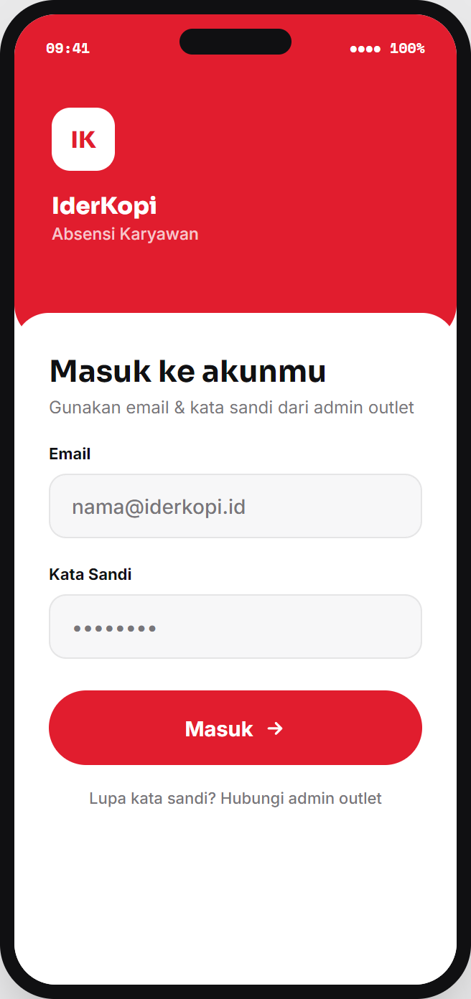
/change-password bila login pertama kali.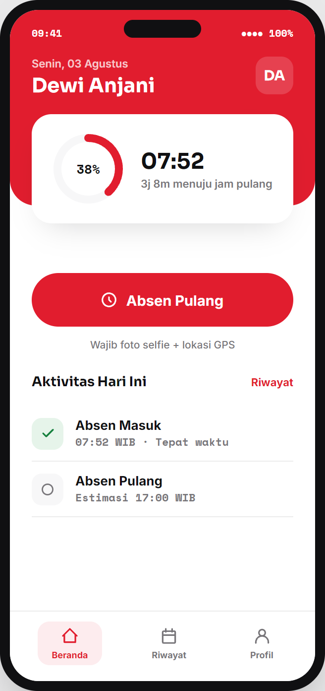
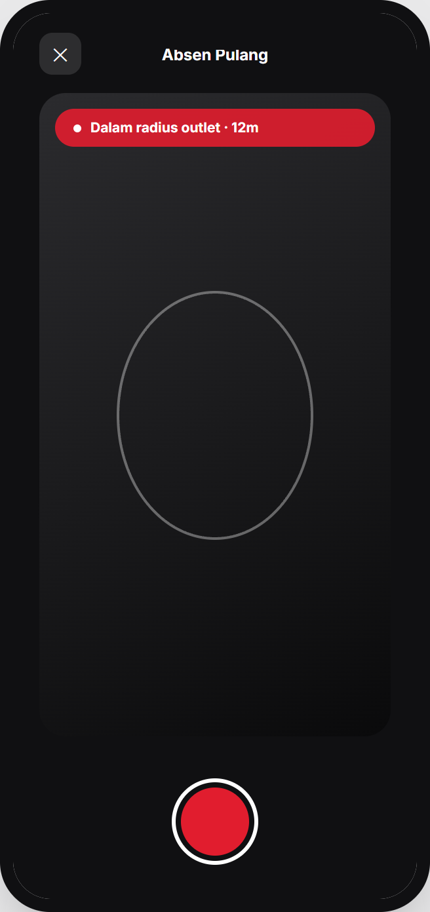
client_request_id.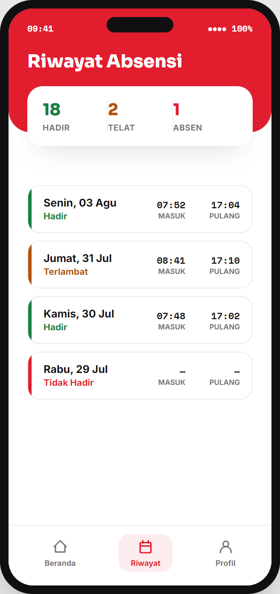
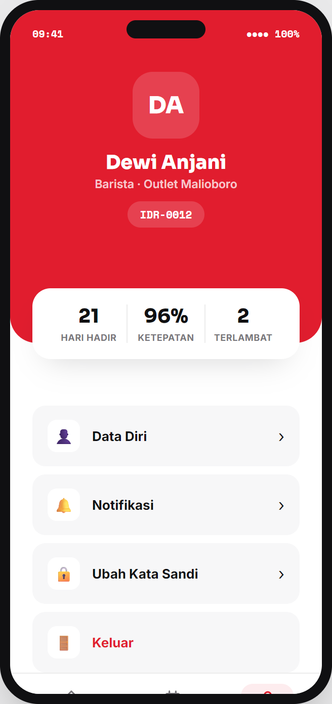
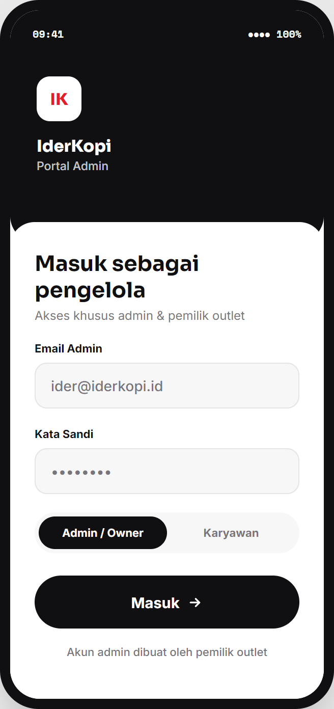
admin@iderkopi.com).super_admin / admin_kpi.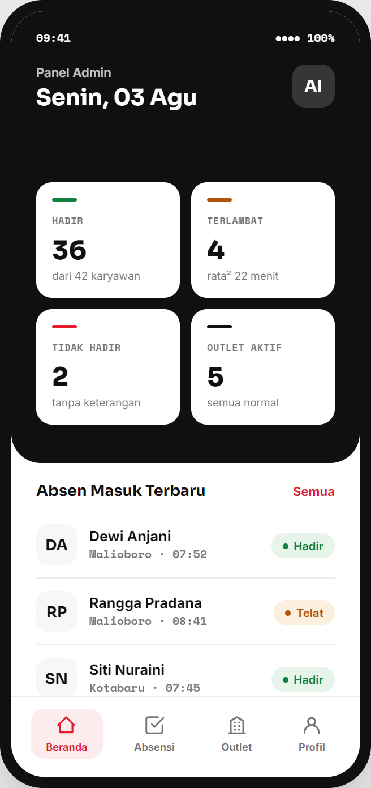
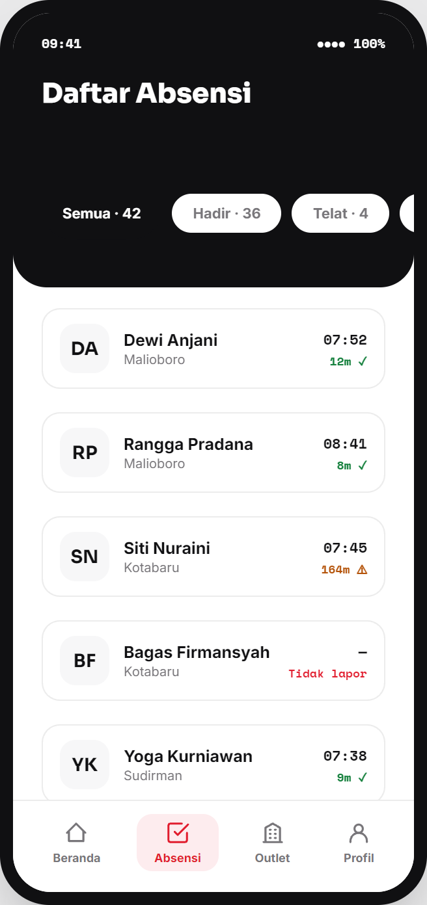
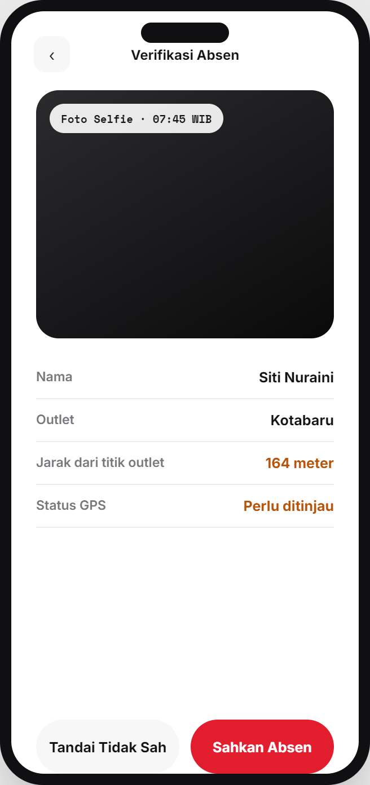
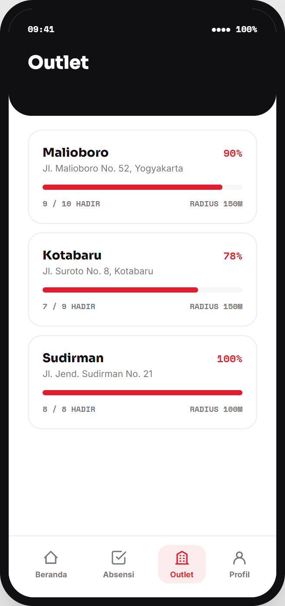
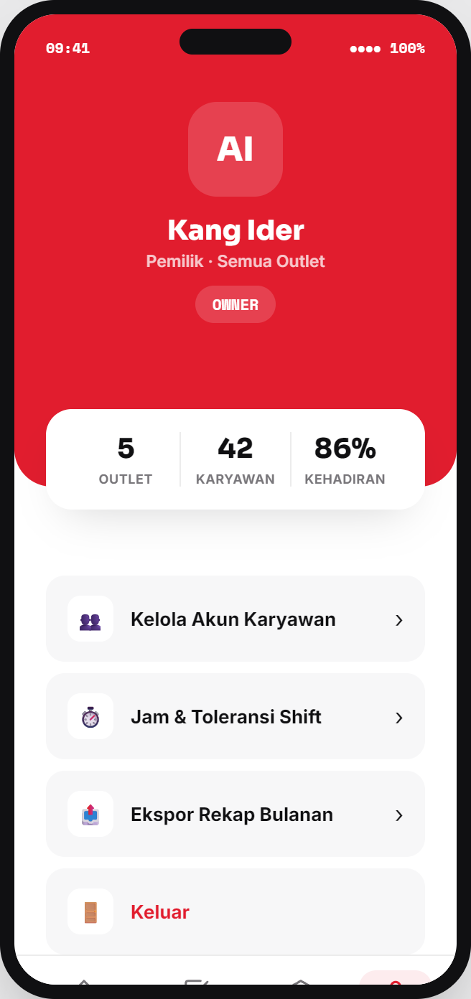
Seluruh komunikasi Flutter Mobile dengan Backend Go Fiber mengacu pada base URL /api/v1 dengan format envelope standar JSON: {"success": true, "data": ..., "message": "...", "error": null}.
| Method | Endpoint Path | Auth Header | Fungsi & Keterangan Response |
|---|---|---|---|
| POST | /api/v1/auth/login | None | Autentikasi email & password. Mengembalikan Access JWT + Refresh Token. |
| POST | /api/v1/auth/refresh | None | Menerbitkan Access Token baru menggunakan Refresh Token yang valid. |
| GET | /api/v1/auth/me | Bearer Token | Mengembalikan data profil pengguna aktif dan flag must_change_password. |
| POST | /api/v1/auth/change-password | Bearer Token | Mengubah password akun dan mereset seluruh sesi refresh token aktif. |
| GET | /api/v1/employees/me | Bearer Token | Mengambil detail data karyawan, kode staf, dan penugasan brand. |
| GET | /api/v1/outlets | Bearer Token | Mengambil daftar outlet aktif beserta koordinat latitude, longitude, & radius. |
| POST | /api/v1/attendance/selfie | Bearer Token | Upload foto selfie multipart file. Mengembalikan storage key / URL foto. |
| POST | /api/v1/attendance/check-in | Bearer + Client ID | Transaksi check-in dengan validasi geofence server dan header client_request_id. |
| POST | /api/v1/attendance/check-out | Bearer + Client ID | Transaksi check-out absensi harian dengan header client_request_id. |
| GET | /api/v1/attendance/history | Bearer Token | Mengambil riwayat absensi harian karyawan berfilter bulan/tahun. |
| GET | /api/v1/kpi/me | Bearer Token | Mengambil nilai dan performa Key Performance Indicator (KPI) karyawan. |
Sebelum melakukan pembuatan rilis aplikasi, jalankan seluruh pengujian otomatis berikut untuk memastikan tidak ada kesalahan regresif:
1. Flutter Static Analysis:
flutter analyze (Hasil: No issues found!)
2. Flutter Unit & Widget Testing:
flutter test (Hasil: 150 / 150 Tests Passed)
3. Backend Go Unit Testing & Vet:
cd auth-backend && go vet ./... && go test ./... (Hasil: All Packages Passed)
Gunakan perintah Flutter CLI berikut untuk mengkompilasi APK rilis dengan konfigurasi endpoint production API:
Build Production APK (`--flavor prod`):
flutter build apk --flavor prod --dart-define=CUSTOM_API_BASE_URL=http://100.90.46.31:2026/api/v1
File APK rilis akan dihasilkan di lokasi: build/app/outputs/flutter-apk/app-prod-release.apk